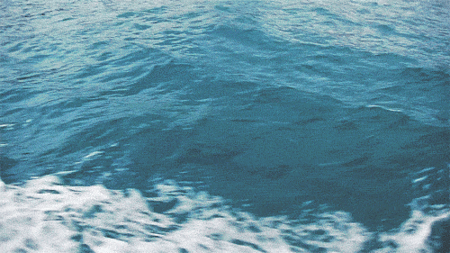

Pål Moddi Knutsen (born 18 February 1987 in Senja) is a Norwegian musician.
His music has been described as a blend of folk music and pop, although he
refers to himself as a singer and storyteller. Moddi is also widely recognised as a political and social activist. video
They say home is the place where your heart is.
Then I am home now, though I am far away.
For so long I've let the forest guard it.
And now it's begging me to stay. And I'm trying my best to be tough.To pretend I am strong and can siphon it off. But I'm not who I wanted to be In my heart I belong in a house by the sea.
They say home is a place where you're needed.
Then I am home now, but I am leaving.To feel my feet being kissed by the seaweed.
And I will be silent and kiss it back. This is not who I want you to see. It's just adding on weight to the darkness in me. And from the little I have understood. I believe that a house by the sea would do good.
They say home is a place you can choose to be.
And I've decided to carry home inside me
So it's not really as if I am leaving
It's more like something pulling meBecause behind everything that I do. I just want to forget, want to carry this throughFill my lungs with the sweet summer air. In my heart, in my mind I am already there
Yeah behind everything that I do. I just want to come home and lay down beside you. And then I'll be who I wanted to be. In my heart I belong in a house by the sea
GoeunPark 2017